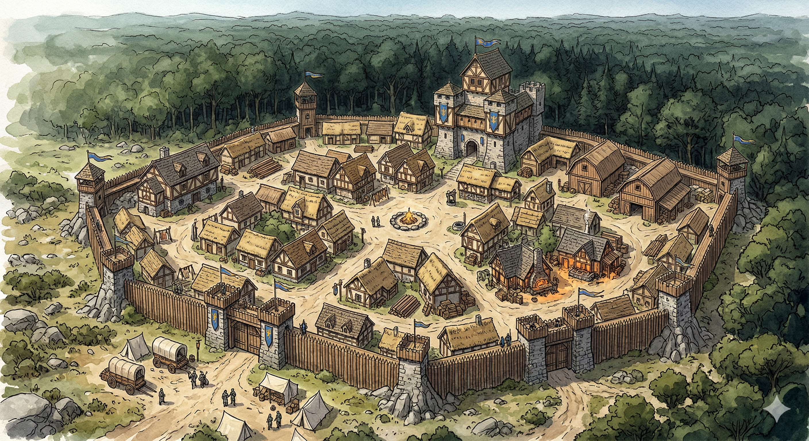

Settlement
Stonehaven

Overview
Stonehaven clings to the southeastern edge of the Blackwood Forest — a frontier outpost where civilization meets wilderness. A tall stone watchtower dominates the skyline against the dark wall of ancient trees beyond the palisade walls. The gates are currently sealed under mysterious circumstances.
Geography
- Southeastern border of Crestfall, adjacent to Blackwood Forest
- Palisade walls between natural stone outcroppings
- The famous watchtower rises sixty feet above the village center
Infrastructure
- Stone watchtower — lookout and final refuge
- Fortified palisade walls with guarded gates
- Adventurers Guild hall near the eastern edge
- Smithy, general store, and supply shops
Economy
- Hunting, trapping, and timber from the forest edge
- Trade in animal pelts and forest resources
- Frontier provisioning for travelers heading south